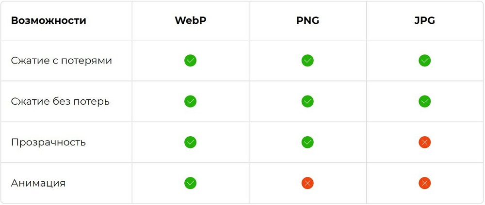

WebP изображения: что за формат и для чего используется
WebP ― относительно новый формат графических файлов, который обеспечивает отличное сжатие изображений при сохранении качества. Чем меньше весит графика ― тем быстрее загружаются страницы сайта, это важно и для поискового продвижения, и для удобства пользователей.
Формат WebP разработан компанией Google. Конвертация картинок в этот формат уменьшает их размер на 25-35% без удара по качеству изображений. К WebP применяются 2 способа сжатия — с потерями и без.
Особенность WebP в том, что сжатие идет за счет снижения качества мелких деталей и текстур. При этом остаются четкие края рисунка и сохраняются гладкие переходы на сплошных участках. Самый большой недостаток этого формата — лица людей при низкой настройке качества выглядят немного пластиковыми.
Плюсы и минусы WebP
- Плюсы:
- Уменьшеный размер файла
- Ускореная загрузка сайта
- существенная экономия трафика для пользователей с лимитированным интернетом – тоже несомненное благо, особенно это касается владельцев мобильных устройств
- WebP умеет сжимать простую графику не хуже PNG, даже несколько выигрывая в размерах при одинаковой цветопередаче и уровне детализации, а с фотографиями справляется гораздо лучше.
Таблица с возможностью форматов

- Минусы
- Основным недостатком является то, что изображения WebP в настоящее время не поддерживаются всеми браузерами, хотя все больше и больше браузеров добавляют поддержку.
- Искажение имеет пластиковый вид
- Неудобный интерфейс экспорта
Давайте сравним форматы JPG и WebP
Формат JPG-73,1кб
Формат WebP-33,6кб
Можно заметить, что при сравнении WebP с JPG первый меньше в 2 раза, при этом потери в качестве минимальны.
Сравним формат PNG c WebP(с разной степенью сжатия)

Формат PNG-354кб
Формат WebP с quality 100%-213кб
Формат WebP с quality 60% 22,9кб
Если посмотреть на все три фотографии, то трудно найти видимые отличия, однако вес второй фотографии значительно меньше, а размер третьей меньше в 15 раз. Если сильно присмотреться то можно заметить на последней фотографии небольшие замыливания, но на мой взгляд это пустяк, если сравнивать то на сколько фото уменьшилось в размерах.
Подведем итоги:
Формат WebP показал cебя самым лучшим образом, позволяя нам существенно уменьшить нагрузку на наши сайты не теряя при этом качества картинки. Единственной проблемой является поддержка этого формата, но в настоящее время все больше и больше браузеров добавляют поддержку данного формата.